Togane, Chiba: things to do, food and stays
Togane · Chiba
Togane
Highlighted on the Chiba map.
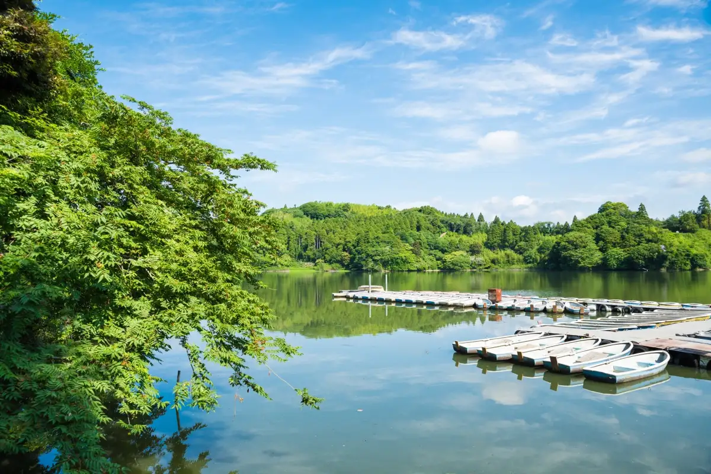
Stay
ＨＯＴＥＬ Ｒ９ Ｔｈｅ Ｙａｒｄ 東金
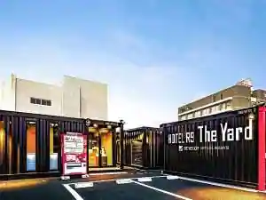
HOTEL R9 The Yard Togane
ホテル東金ヒルズ 東金バイパス
Hotel Togane Hiruzu Togane Baipasu
Hotel in Tojoyado, Togane with parking.
UE GARDEN RESORT
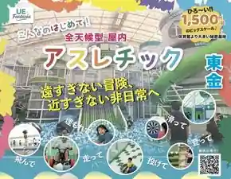
UE GARDEN RESORT
Dining
a.Un
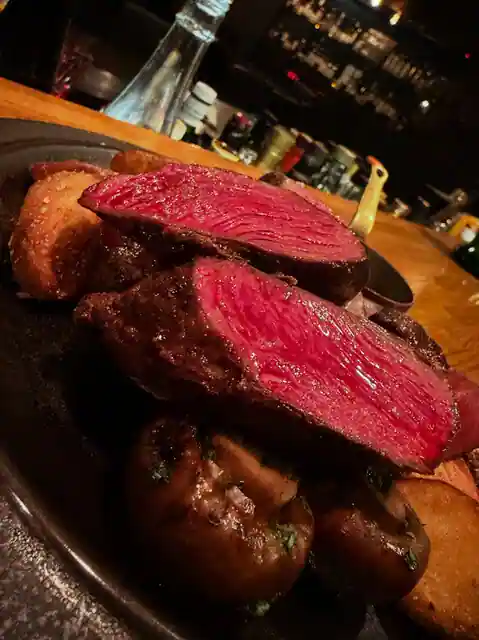
a. Un
支那そば専門店 へいきち 東金店
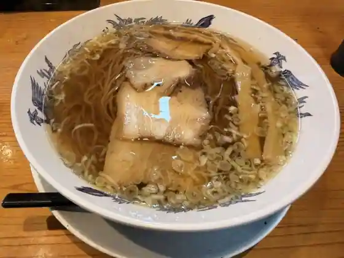
Shina Soba Senmon Heikichi Togane
玉くし
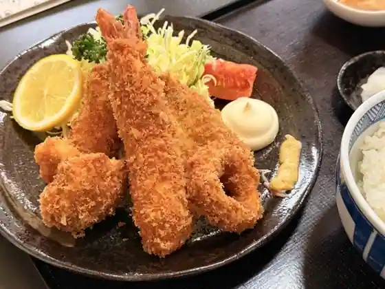
Tama Kushi
竹田屋 東金店
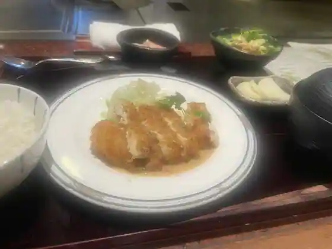
Takeda Ya Togane
たぶん…世界一小さいチョコレート工場
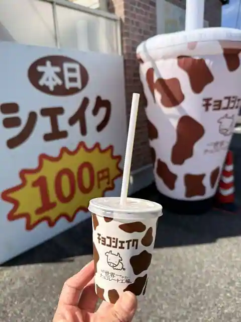
Tabun Sekaichi Chisai Chokoreto Kojo
チェルビックドーナツ
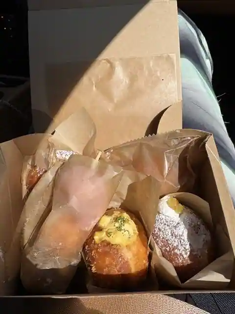
Cherubikkudonatsu
イージーダイナー
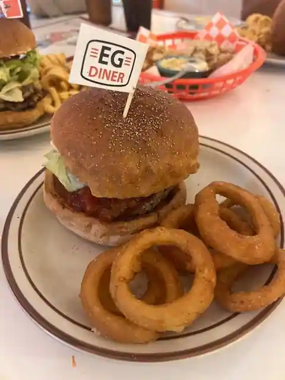
Ijidaina
ぼのぼの
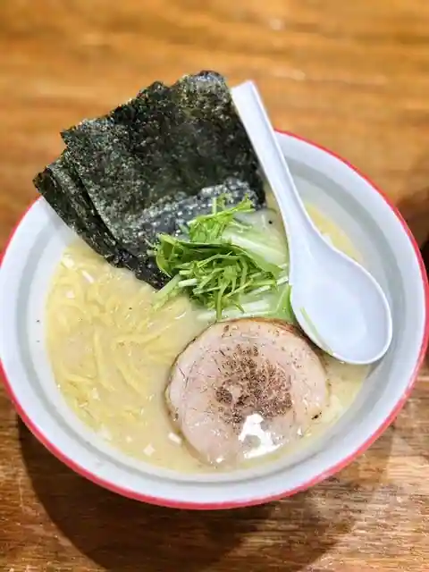
Bonobono
リトルチャイナ 豊
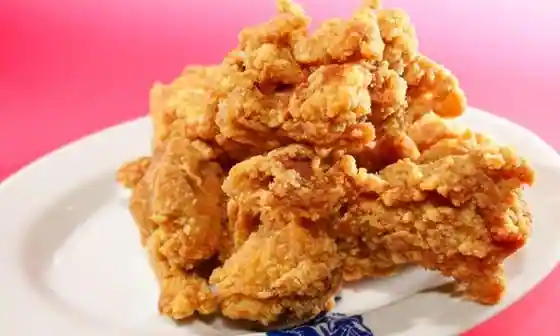
Ritoruchaina Yutaka
珍来 東金店
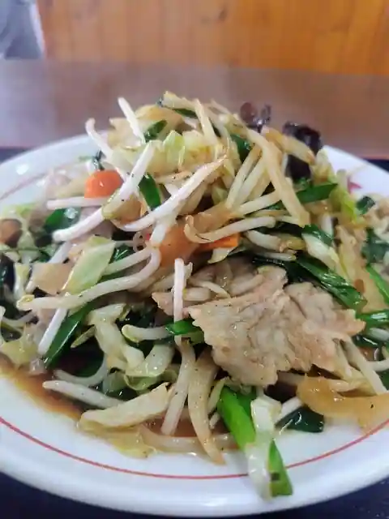
Chin Rai Togane
麺屋いとう 東金店
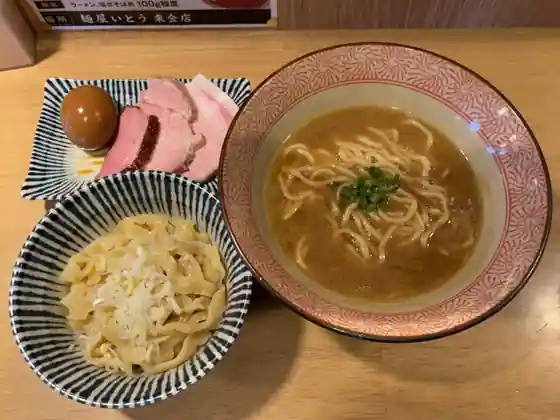
Men Ya Ito Togane
レストラン玉子家
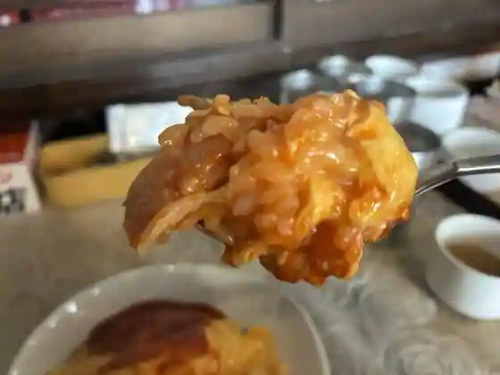
Restaurant Tamago Ie
竜ちゃんラーメン
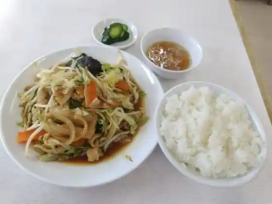
Ryu Chan Ramen
甚五郎
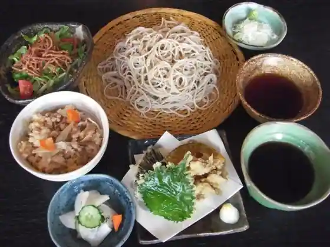
Jingoro
豆厨ゆばせい
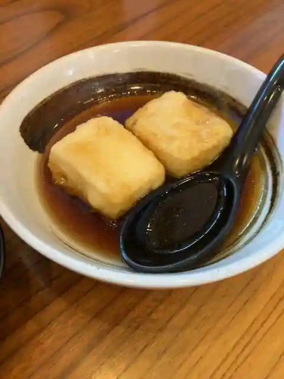
Mame Zu Yubasei
中華そば たすく
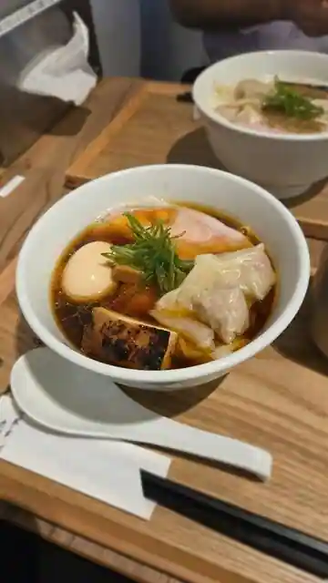
Chuka Soba Tasuku
お食事処 うわや
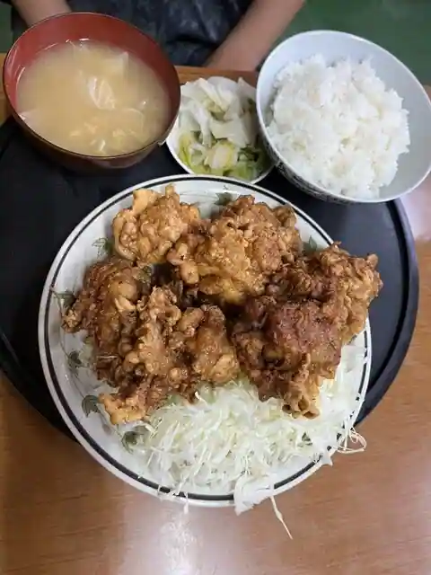
O Shokuji Tokoro Uwaya
東金ステーキMOG
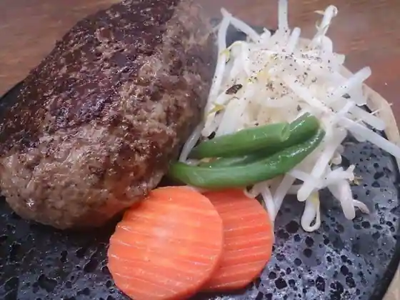
Togane Steak MOG
逸香
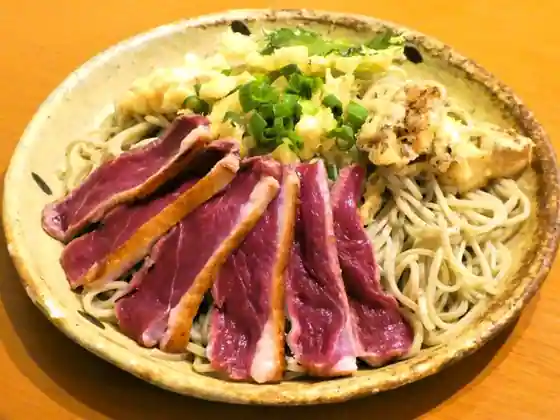
Itsu Kaori
こつこつ
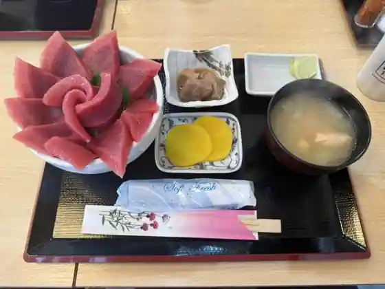
Kotsukotsu
牛まる
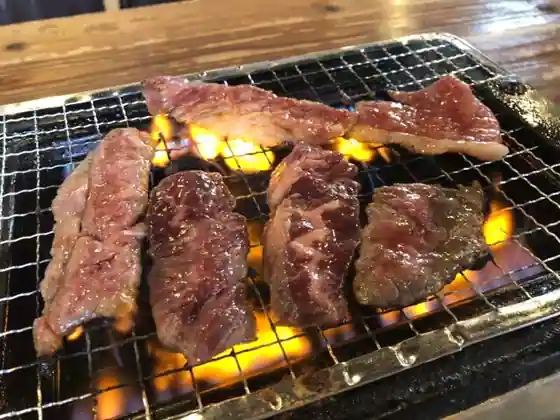
Ushi Maru
東千葉カントリークラブ レストラン
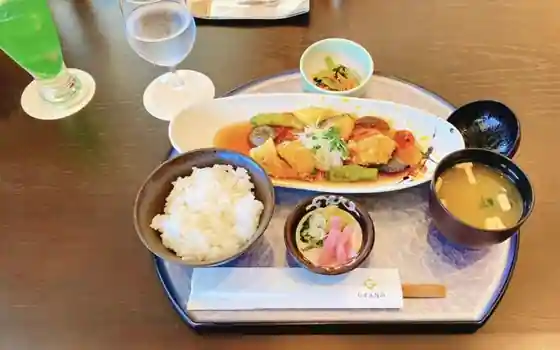
Higashichiba Kantorikurabu Restaurant
からポテ食堂
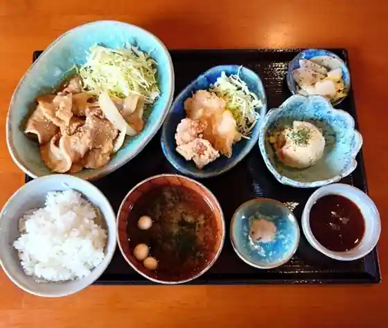
Kara Pote Shokudo
石崎ぎょうざ店
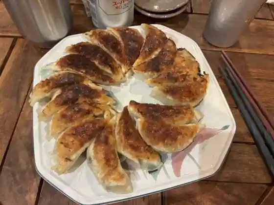
Ishizaki Gyoza
Sights
Osuhebigaike
Roadside Station Mi no Ri no Sato Togane
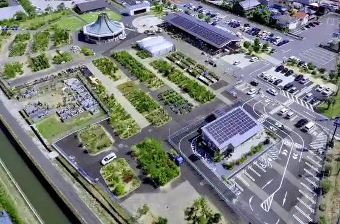
Hachi Tsuru Mizumi
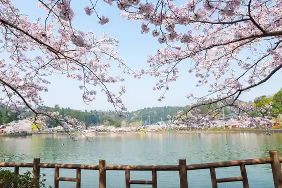
Hiyoshi Shrine
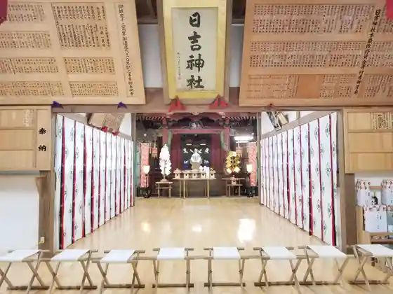
Sanno Dai Park
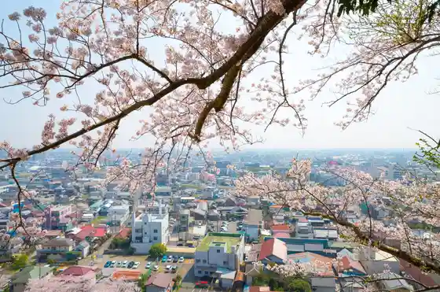
Togane Seinen no Mori Park
Sambu Midori no Kaze Togane Mise
Glee Club
Saifuku Tera
Hale Luana